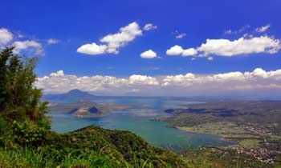

The Philippines consists of over 7,000 islands and provides its homeowners endless coastlines as well as crystal clear Pacific Sea waters. The nation has a warm and comfortable year-round climate, an inexpensive of living, a few of the best medical care in Southeast Asia as well as offers simple access to various other locations in Asia. Of course, similar to any kind of developing nation, it is important to comprehend just what specifically makes it a desirable retired life place for Americans. The adhering to are the leading six reasons Americans retire in the Philippines.
1. COST OF LIVING
The cost of living is exceptionally low in the Philippines. For approximately $1,000 a month, it is possible for retired people to live easily in the nation. For just $1,200, it is possible to live a life of comparative deluxe. For around $200 a month, retired people could rent out a terrific one-bedroom apartment or condo; if purchasing a home rather than renting, high-end homes can be bought for about $250,000 or much less.
Upkeep and also amusement expenditures are additionally low when compared with the cost of living in the United States of America. A plumbing professional, for example, sets you back regarding 400 pesos, or less compared to $10. A wonderful supper for 2 prices about 1,000 pesos, or roughly $25.
BUDGET FRIENDLY HEALTH CARE INSURANCE COVERAGE AND HEALTHINESS CARE FACILITIES
Healthcare coverage in the Philippines is quite economical for senior citizens. The regular expense of seeing an English-speaking medical professional is around 300 pesos, the matching of $7. For much more complex clinical treatments such as X-rays, the price to take and also check out the pictures is around 800 pesos, or about $20.
The medical centers in the Philippines are comparable to the medical facilities in the U.S. For instance, Asian Hospital has among the best heart specialists in Southeast Asia, who splits time in between the Philippines as well as Washington, D.C. The country also has the Philippine Heart Facility, an establishment that provides a variety or professionals to retirees and also citizens.
Filipino medical professionals are prominent for training abroad as well as are normally affiliated with global medical organizations. The bedside fashion as well as skills of Filipino nurses is looked for across the globe, and also pharmacies are quickly accessible to those seeking medication.
3. THE DIVERSITY OF FOOD
The Philippines offers a terrific diversity of gastronomy. Neighborhood Filipino food has blended Spanish and also Chinese impacts to create a distinct variety of food alternatives. In addition, as expatriates group to the Philippines, the accessibility of American, Japanese, Indian, Arabic as well as Southeast Asian and Italian food has actually enhanced.
4. CONTEMPORARY CONVENIENCES
The Philippines provides retired people all the modern-day benefits of an American way of life in a tropical heaven. With big malls, modern-day transport options, Hollywood films and also cable, a retired person has the ability to sustain a superior lifestyle just like one in America.
Up until recently, the country enabled access provider to set their very own speeds, decreasing the potential of a high-speed connection. In reaction to change demands, the Filipino federal government has actually set a minimal speed need of 256 kilobits each 2nd (kbps), offering indications that the country's web speed will quickly get on the same level with its various other modern comforts. Currently, nevertheless, it ranks at the bottom of Oriental nations when it concerns connection rates.
5. A PLETHORA OF ATTRACTIONS & PLACES TO VISIT
The nation is understood for its tropical beaches, diving areas and amazing views, and also it attracts retired people to live energetic and exterior lifestyles. From the white sand beaches of renowned Boracay Island to the hills of Tagaytay, the Philippines has thousands of islands that offer unique outside perks..
The Filipino weather, which is composed of a long completely dry season complied with by a lengthy rainy season, is conducive to exterior tasks. Even throughout the wet season, the temperature is reasonable throughout the entire year. If the weather condition gets too rainy for trekking and coastline lounging, the nation offers wonderful wellness facilities that give massage therapies and advertise relaxation.
6. LOW LANGUAGE OBSTACLE
For Americans seeking to retire to this country, English is among the Philippines' official languages. Lots of, otherwise all, Filipinos are fluent in English, making a shift to this country an easy one.